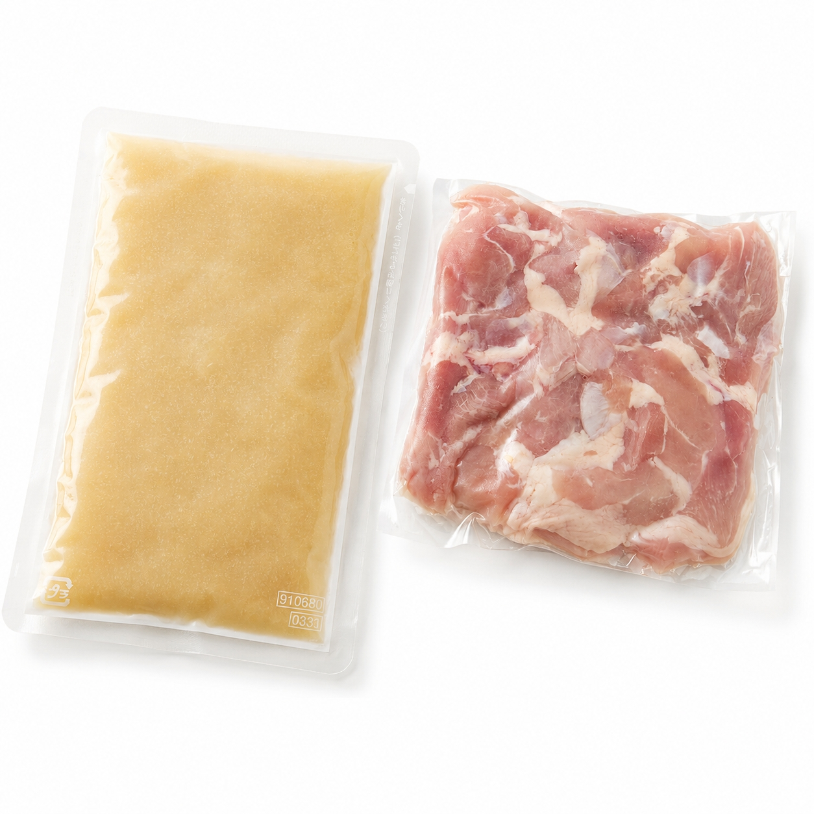
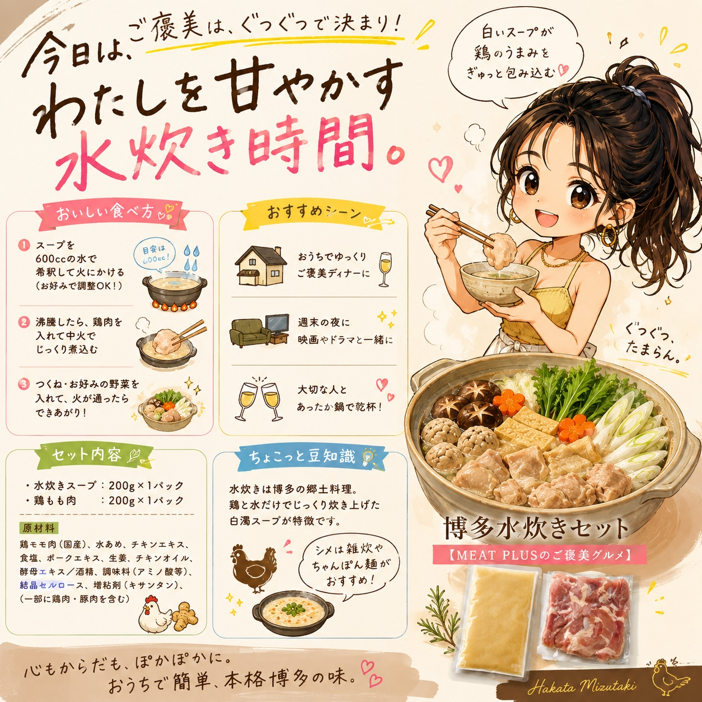
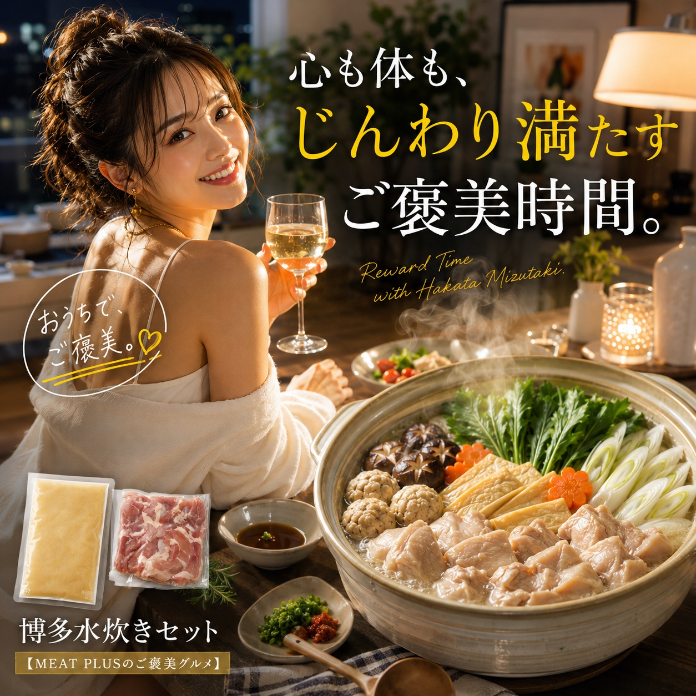

SCENE 01
I007

i 惣菜・加工品
博多水炊きセット
【鶏の旨味、じんわり染み渡る。本格博多水炊きをご家庭で。】
- 内容量1セット（水炊きスープ：200ｇ/ｐ、鶏もも：200ｇ/ｐ）
- 保存冷凍
- 産地日本
商品の特徴を読む
肌寒い夜、家族で囲む温かいお鍋。そんな食卓の主役に、本場博多の味『水炊き』はいかがでしょうか。このセットの主役は、じっくりと炊き出した鶏の旨味が凝縮された濃厚な白湯スープ。一口飲めば、滋味深いコクと香りが口いっぱいに広がり、心も体もじんわりと温まります。セットの鶏肉は、ぷりぷりとした食感がたまらない国産の鶏もも肉。スープの旨味をたっぷりと吸い込み、噛むほどにジューシーな味わいをお楽しみいただけます。調理はとっても簡単。スープをお水で希釈し、お好みの野菜と一緒に煮込むだけ。白菜や長ネギ、きのこなどを加えれば、彩りも栄養も豊かなごちそう鍋が完成します。〆にはご飯を入れて雑炊に。最後の一滴まで博多の味を堪能できるこの水炊きセットで、素敵な食卓のひとときをお過ごしください。
公式サイトへ移動します。価格・在庫・配送条件は移動先で最終確認してください。

SCENE 02
【鶏の旨味、じんわり染み渡る。本格博多水炊きをご家庭で。】

SCENE 03
【鶏の旨味、じんわり染み渡る。本格博多水炊きをご家庭で。】
PRODUCT INFORMATION
購入前に確認したい商品情報
- 商品名
- 博多水炊きセット
- 商品規格
- 1セット（水炊きスープ：200ｇ/ｐ、鶏もも：200ｇ/ｐ）
- 保存方法
- 冷凍
- 原産国
- 日本
- 製造地
- 日本
- 賞味期限
- 発送日より3ヶ月
原材料
鶏モモ肉（国産）、水あめ、チキンエキス、食塩、ポークエキス、生姜、チキンオイル、酵母エキス/酒精、調味料(アミノ酸等）、結晶セルロース、増粘剤（キサンタン）、（一部に鶏肉・豚肉を含む）
FAQ
購入前のよくあるご質問
野菜はセットに含まれていますか？
いいえ、お野菜はセットに含まれておりません。白菜、長ネギ、しいたけ、春菊、豆腐など、お好みのお野菜や具材をご用意いただき、オリジナルの水炊きをお楽しみください。
届いた時にスープが凍っていませんでしたが、大丈夫ですか？
はい、問題ございません。スープは常温対応の製品のため、お届け時に凍っていない場合がございますが、品質には影響ありませんのでご安心ください。すぐに使用しない場合は、冷凍庫での保管をおすすめします。
MEAT PLUS OFFICIAL SHOP
【鶏の旨味、じんわり染み渡る。本格博多水炊きをご家庭で。】
仕入れ・加工・梱包・発送まで自社で行うMEAT PLUSの公式オンラインショップでご注文いただけます。
公式オンラインショップで購入する